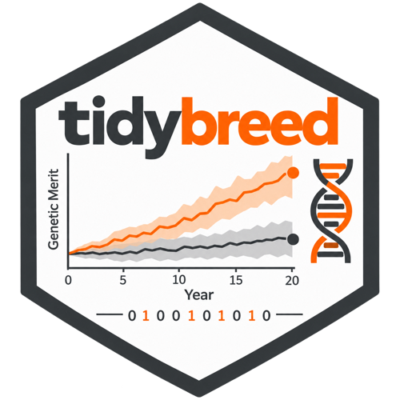

Extract genotype data for individuals, by chip and/or causal loci
Source:R/extract_genotypes.R
extract_genotypes.RdReturns a tibble of genotypes (0/1/2 encoding) for a set of individuals,
restricted to loci selected by a chip definition, a filtered
genome_effect_loci view, or both. Pipe a tidybreed_table (from
get_table() and optionally dplyr::filter()) as the first argument to restrict
which individuals are included.
At least one of chip_name or effects_tbl must be provided. When both
are given the locus sets are unioned (deduplicated, ordered by
locus_id).
Chip path — the returned individual set is the intersection of:
Animals with
has_<chip_name> == TRUEinind_metaAnimals matching any pending
filter()predicates ontblLoci with
is_<chip_name> == TRUEingenome_meta
Causal-locus path (effects_tbl) — the returned individual set is:
Animals matching any pending
filter()predicates ontbl(or all individuals inind_haplotypewhen no filter is applied)Loci whose
locus_idappears in the collectedeffects_tbl
Usage
extract_genotypes(
tbl,
chip_name = NULL,
effects_tbl = NULL,
loci_tbl = NULL,
col_name = NULL
)Arguments
- tbl
A
tidybreed_tablefromget_table(), optionally piped throughdplyr::filter(). Any table with anid_indcolumn is accepted; the individuals acted on are the distinctid_indvalues present in the (filtered) table. An unfilteredind_metaselects every individual; an unfilteredind_ebv,ind_index,ind_genotype, ... selects only the individuals that have rows there. A table withoutid_indis an error.- chip_name
Character or
NULL. Name of a chip previously defined viadefine_chip()and applied to animals viaadd_genotypes(). WhenNULLthe chip path is skipped.- effects_tbl
A
tidybreed_tablefromget_table(pop, "genome_effect_loci")(optionally filtered), orNULL. One row per (term x locus), so usedplyr::filter()to restrict bytrait_name,effect_owner,contrast_name,genome_value, orlocus_name. Effects are stored as terms over one or more loci, and a multi-locus term contributes every one of its loci. WhenNULLthe causal-locus path is skipped.- loci_tbl
A
tidybreed_tablefromget_table(pop, "genome_meta")(optionally filtered), orNULL. A general locus filter independent of chips and causal-locus sets — e.g.filter(!chr_name %in% c("X", "Y", "MT"))to restrict to autosomes. The collected table'slocus_namevalues become the locus set. Unioned withchip_name/effects_tblwhen combined.- col_name
Character. Name of the BOOLEAN column in
ind_metathat records chip genotyping status. Default:paste0("has_", chip_name). Ignored whenchip_nameisNULL.
Value
A tibble with one row per individual and one column per selected
locus (id_ind + locus_N columns). Locus columns use 0/1/2 integer
encoding and are ordered by locus_id.
Examples
if (FALSE) { # \dontrun{
# All genotyped animals on the 50k chip (unchanged usage)
geno <- pop |> get_table("ind_meta") |> extract_genotypes("50k")
# Only females genotyped on the HD chip
geno <- pop |>
get_table("ind_meta") |>
dplyr::filter(sex == "F") |>
extract_genotypes("HD")
# Every causal locus for a trait (all individuals)
geno <- pop |>
get_table("ind_meta") |>
extract_genotypes(
effects_tbl = get_table(pop, "genome_effect_loci") |>
dplyr::filter(trait_name == "ADG")
)
# Additive QTL with a large coefficient, females only
geno <- pop |>
get_table("ind_meta") |>
dplyr::filter(sex == "F") |>
extract_genotypes(
effects_tbl = get_table(pop, "genome_effect_loci") |>
dplyr::filter(trait_name == "ADG", contrast_name == "additive",
abs(genome_value) > 0.15)
)
# Chip loci + causal loci unioned
geno <- pop |>
get_table("ind_meta") |>
extract_genotypes(
chip_name = "50k",
effects_tbl = get_table(pop, "genome_effect_loci") |>
dplyr::filter(trait_name == "ADG")
)
} # }